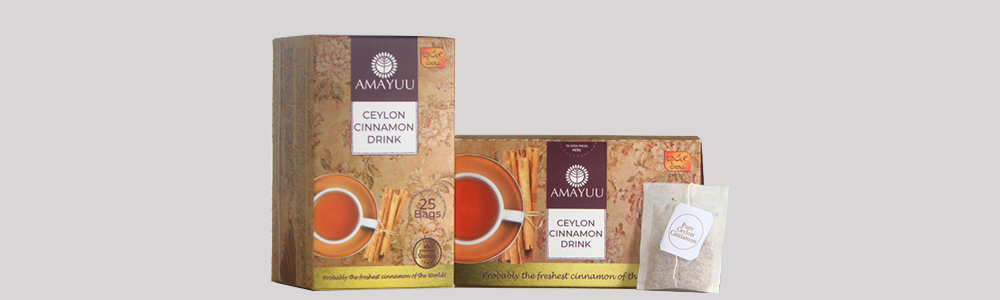
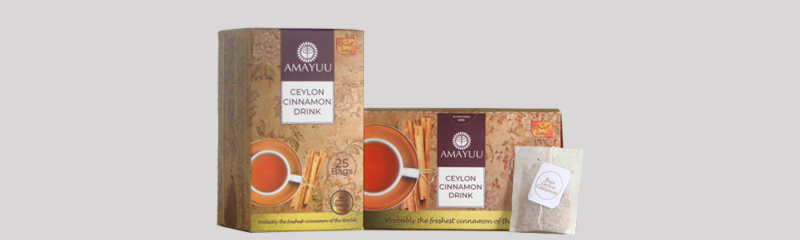

Why Amayuu?
AMAYUU Cinnamon is processed into quills and packed within two days of harvesting (probably the freshest Cinnamon of the World) to preserve its amazing health benefits, aroma, taste and colour. Compare this with the traditional method which takes 10-14 days.
We harvest selected materials from chemical free best cinnamon fields in the area surrounding the processing plant (in Matara-southern Sri Lanka), peel and process them hygienically into variety of forms in ISO22000 certified processing plant. ISO 22000 certified production process delivers products with low moisture and very low microbial counts. Our products can be consumed in raw form without cooking. ...
We take great care to select only the best part of the inner bark to make premium quality quills. Therefore, we use 50% more raw material stock to produce our Cinnamon quills. These quills are then cut into different sizes. Parts of these quills are then ground into Tea bag cut and fine powder; these two materials do not contain chips or any other byproduct or wastes. All our Cinnamon products are made from Ceylon cinnamon in pure natural form without any chemical treatments or additives.
We assure you that our Cinnamons are the freshest and finest Ceylon Cinnamon you can buy anywhere in the world. We are a family-managed enterprise operating in the southern Sri Lanka – the heart of the cinnamon growing area and producing only a very few tons of this artisanal product every year.
Vision
“Be the ICON of Pure Ceylon Cinnamon Worldwide”
Mission
SAVIRU SPICES endeavors to bring pride to Pure Ceylon Cinnamon – the precious indigenous spice with true Sri Lankan identity that won the world for us over many centuries.
Ours will be the Model cinnamon processing plant with ISO 22000-quality certification producing cinnamon within two days of harvesting in order to preserve the freshness and immaculate quality of Ceylon Cinnamon. We blend the traditional artisanal skills of cinnamon peeling with modern innovative technologies to delicately crafted cinnamon products of only the premium quality. All our cinnamon products will be in pure natural form without any chemical treatments or additives.
Our products will aim to satisfy customers in the top echelons demanding only the premium quality cinnamon.
We believe in a future built on continuous innovations to further improve on quality and competitiveness of Pure Ceylon Cinnamon and trust placed on our brand by customers worldwide. We strive to create joyful experiences for our customers with all things cinnamon while supporting hundreds of cinnamon grower families in southern Sri Lanka.